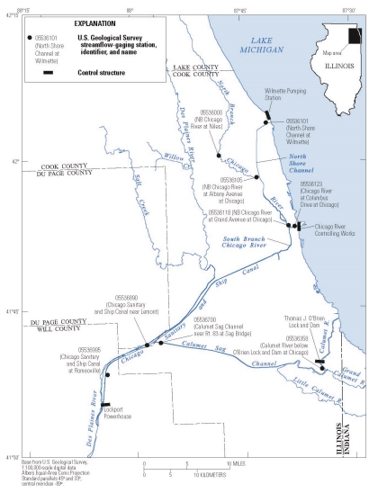

Chicago Area Waterways System Monitoring Network Evaluation

The Chicago Area Waterway System (CAWS) is on the front line of the battle to keep the Asian carp out of the Great Lakes because of the continuous waterway connection present. This connection has resulted in a number of areas where the USGS has been asked to provide hydraulic and water-quality information to assist in eDNA detection, rapid response actions, ecological separation evaluations, and flow reversals through the electric fish barrier. The current status of flow monitoring stations on the CAWS is insufficient to properly address many of these issues.
This project compiled historical flow and water-quality data from the CAWS into a single database that will streamline model development and calibration. This project also evaluated the historical database and the current network of gaging stations on the CAWS to identify the critical inputs and gaps in information. Some of the identified data gaps have been addressed through synoptic field measurements and some new monitoring locations. Continued efforts are underway to address these gaps and develop a summary report, enhance web delivery of data, and other products as necessary.
Hydraulic and water-quality models of the CAWS are an important tool for data-based decision-making such as the ecological separation. Development and calibration of these models requires flow data from throughout the CAWS.
- Data gaps existed in the gaging station network on the CAWS. A new gaging station on the lower Calumet-Sag Channel was established in 2011 to fill one of the identified data gaps.
- A series of synoptic water temperature surveys were collected to define seasonal trends in water temperature and the impact of removing two large power plants along the CAWS.
- Water-surface elevation data from multiple gaging stations were compiled to animate water-surface profiles for selected periods (dry weather and storm events) for a better understanding of the complex CAWS hydraulic setting.
- Field discharge measurements documented large backflow events (flow reversal to Lake Michigan) in April 2013 at both the T.J. O’Brien Lock and Dam and the Chicago Lock and Dam. These measurements provided important information on the hydraulic capacity of these structures.
- USGS report on the CAWS hydrology to be published on-line in Summer 2014.
- Chicago Waterway Observatory database
Jim Duncker, jduncker@usgs.gov
Illinois Water Science Center
217-328-9710